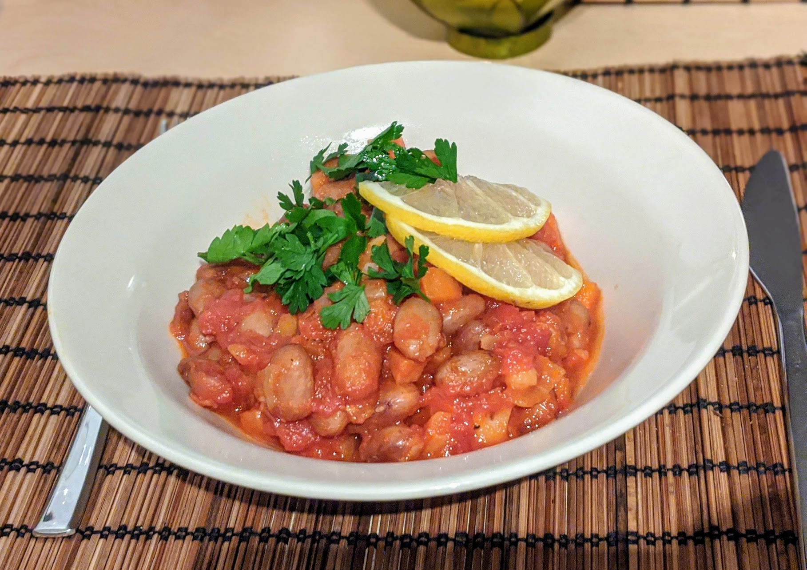

Barbunya Pilaki

Pour 5 personnes :
- 350g de haricots borlotti secs ("haricots coco roses")
- Un gros oignon
- Deux carottes
- Une boîte (400g) de tomates concassées
- Un demi-bouquet de persil
- Deux cuillères à café de sucre
- Un citron
- Huile d'olive, sel, poivre
- Faire tremper les haricots dans un grand saladier rempli de beaucoup d'eau pendant au moins une nuit.
- Égoutter et rincer les haricots, les mettre dans une grande casserole remplie d'eau froide. Porter à ébullition, laisser cuire à feu moyen pendant 35 minutes. Il faut que les haricots soient cuits, mais quand même un peu croquants.
- Pendant ce temps, éplucher et couper l'oignon et les carottes en petits cubes. Égoutter les haricots (on peut garder l'eau, voir ci-dessous).
- Faire revenir l'oignon puis les carottes dans la casserole avec de l'huile d'olive.
- Ajouter les tomates, le sucre, les haricots, et 300-400mL d'eau (par exemple en rinçant la boîte de tomates). Saler, poivrer, porter à ébullition et laisser mijoter à feu moyen-doux et à couvert pendant 35 minutes.
- Pendant ce temps, couper le citron en tranches, ciseler et laver le persil.
- Servir soit chaud (immédiatement après la cuisson), soit refroidi (comme une salade) ; dans les deux cas, accompagner avec du persil frais ciselé et des tranches de citron.
Remarque : l'eau de trempage des haricots est bonne à jeter, par contre l'eau de cuisson peut être gardée pour épaissir un peu une sauce, par exemple dans un ragoût.